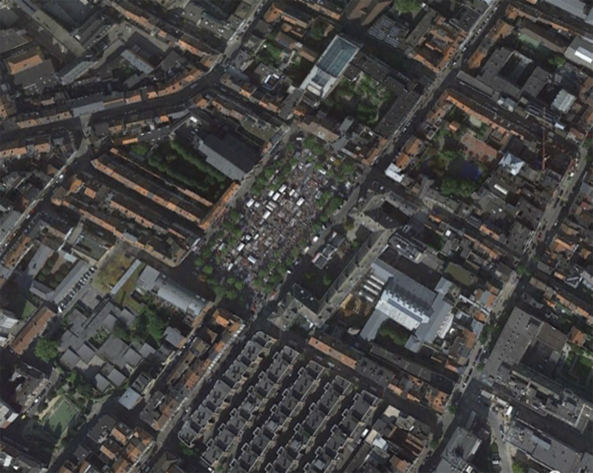

Résidence - Atelier partagé (shared studio)
January 15th - March 28th, 2019

Célestine à Gallipoli is a curatorial duo founded in September 2018 by Clémence Bellisson and Giulia Blasig. After curating a first group show at La Réserve (10 Pétite rue des Bouchers, Brussels) on fiction and domesticity with artworks by four different artists and a publication by three guest writes, the residency at Hectolitre will be their second project together. From January and for the following two months, Célestine à Gallipoli will invite three artists for a two-month stay in the Hectolitre’s space. First a residence and then an exhibition, the project presents itself as an ecosystem in movement, through several mediums, where artworks will reveal the common, fragile and ephemeral rhythms and trajectories that unite the neighborhood of the Marolles. The project constructs itself through the multitude of animate and inanimate presences that cohabit this quarter of the city. The flea market of the Jeu de Balle and its essence, as a space where objects and memories are recycled, recovered and re-appropriated, will be used as an inspiration tool, inviting the artists to put their practice in dialogue with these elements, the area and its history. The final exhibition will be a culmination of responses to the forces of this neighborhood and the manner in which it has affected the artists. The different histories and point of views that compose the space will invite us to rediscover and traverse the Jeu de Balle from a different point of view and to meet its inhabitants. This « artist occupation » will be enriched with studio visits, performances, video projections, workshops and events, encouraging moments of exchange and dialogue between the artists and the public. An important part of the project will be the documentation of the artists’ contributions and interventions, in order to leave a trace and be included in the collective memories and archives of the Hectolitre.